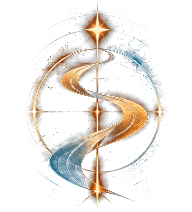
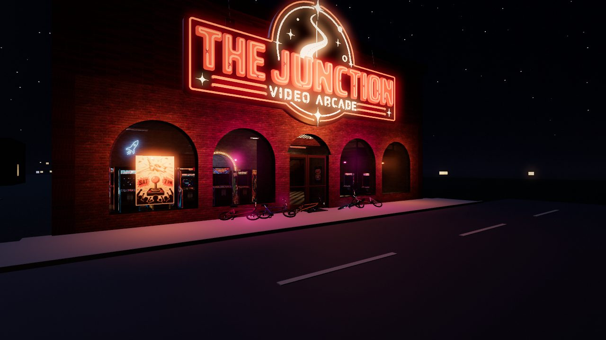
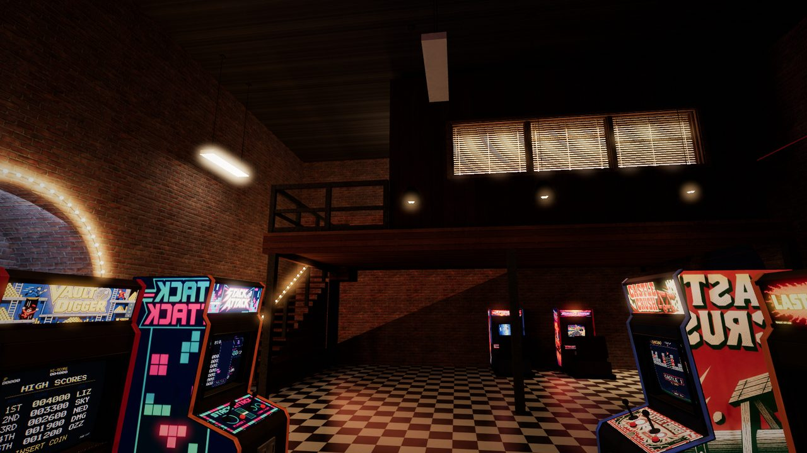

THE PATH
Something is waiting downtown.
PLAY — FIRST CHAPTER EARLY BETA
NEW · v0.2 THE ARCADE ANSWERS
Free browser chapter: 1982, the ride downtown, THE JUNCTION arcade, and the cabinet with no name.


WHAT’S NEW
v0.2 · THE ARCADE ANSWERS
October 1, 2026
A big update to the first chapter: the arcade has a heart now, the basement has secrets, and the machine at the back of the Junction is a whole new experience.
Starvector, rebuilt from the ground up
- The machine nobody has ever topped is now a full into-the-screen sprite shooter, in the spirit of the great super-scaler arcade games.
- Three acts, three worlds: a nebula field of tumbling rocks, a canyon of fire on a dead moon, and a plain of enormous carved stones under an aurora.
- A boss at the end of every act, each with three phases, telegraphed attacks and a health bar.
- A recharging shield. It takes one hit and refills if you stay clean.
- Combos and bonuses: chain kills for a multiplier, clear whole formations for a bonus, fly close for near-miss points.
- Feel and sound: a barrel roll to dodge, hit-stop and big explosions, and an original chip-music soundtrack for each act plus a boss theme.
- Fairness: it’s hard, but every quarter you lose makes the next run a little gentler. You still have to earn the win.
- Beat it, and enter your initials. Then see what happens.
The Junction
- Every top score in the arcade is taken… except one. Keep an eye on the high-score tables.
- The arcade is more alive while you play. Things in the room react. Pay attention.
- Music and a jukebox. A song starts the moment you walk in, from a jukebox by the arch at the back. Press E at it to pick the next one.
- A wall clock, the office upstairs and more of the room’s details.
The basement
- Things to look at. Walk up to the D&D table, the posters, the corkboard, the clock and the console and see what you notice.
- Your walkie-talkie works. It calls from the yard until you go out. Once you’re on your bike, hold T to talk back.
- New posts on the BBS. Sit at the computer and read the board (E for the next post).
The cabinet at the back
- What waits in the back of the arcade has been rebuilt: seven games in one machine, with retro 8-bit sound, a new start screen, and a new ending. We won’t say more.
Fixes and polish
- The arcade runs smoothly. Only the machines you’re facing run at full speed; the rest idle until you look their way.
- Every arcade game fills your screen. Step up to any machine and the view glides in until the game fills the window. Walk away and it glides back.
- The mouse stays in the game. Click once and your view is back, even after pressing Esc, closing a cabinet or going out the door.
- A gentler opening. You work it out yourself; if you’re stuck for a while a quiet hint shows up. Press Esc to skip it.
- A calmer walkie. It chirps twice when you wake, then only now and then, quietly. On the bike its squeal and static are half as loud.
- Smoother on every machine. Big and high-DPI windows draw at a lower internal resolution, and a slow machine steps it down on its own. Press F3 for a small frame-time counter.
- A sharper Starvector when you step up to the machine and the glass fills your screen.
- Clearer visuals while flying: enemy shots are always bright pink-and-white, objects cast shadows on the ground, and backgrounds stay out of the way.
- Sound now starts on your first key press or click (the browser’s rule).
v0.1 · Early beta (September 27, 2026): the first public build. The Handshake, waking in the basement in 1982, the ride downtown, THE JUNCTION arcade and its games, and the cabinet with no name.
ABOUT
THE PATH is a first-person story game in early beta. The first chapter is free to play in your browser while we keep building.